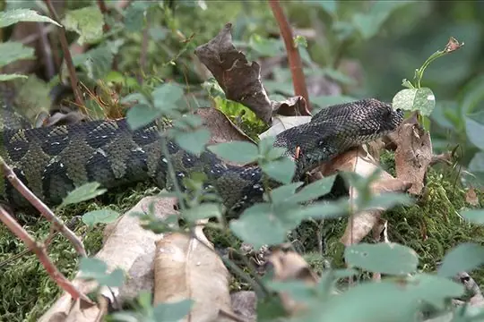

Snakes of Ethiopia
104 snake species are recorded in Ethiopia in SnakeList: 33 venomous and 71 non-venomous, from 12 families.
- 104species
- 33venomous
- 71non-venomous
- 12families
These totals count the snakes SnakeList records as living in Ethiopia. A species counts if it is recorded anywhere in the country, so not every snake lives in every region.
Species
Showing 104 species
 African CobraNaja pallida
African CobraNaja pallida African Rock PythonPython sebae
African Rock PythonPython sebae African Shovel-nosed SnakeScaphiophis albopunctatus
African Shovel-nosed SnakeScaphiophis albopunctatus Ashe's Spitting CobraNaja ashei
Ashe's Spitting CobraNaja ashei- No photo yetBale Mountains adderBitis harenna
 Banded SnakePseudoboodon lemniscatus
Banded SnakePseudoboodon lemniscatus Battersby's Green SnakePhilothamnus battersbyi
Battersby's Green SnakePhilothamnus battersbyi- No photo yetBeautiful Cat SnakeTelescopus pulcher
 Beautiful Sand SnakePsammophis pulcher
Beautiful Sand SnakePsammophis pulcher Bequaert's Green SnakePhilothamnus bequaerti
Bequaert's Green SnakePhilothamnus bequaerti Black MambaDendroaspis polylepis
Black MambaDendroaspis polylepis Black-headed MicrelapsMicrelaps vaillanti
Black-headed MicrelapsMicrelaps vaillanti- No photo yetBlack-headed Smooth SnakeMeizodon plumbiceps
 Black-necked Spitting CobraNaja nigricollis
Black-necked Spitting CobraNaja nigricollis- No photo yetBlanford's Blind-snakeAfrotyphlops blanfordii
 BoomslangDispholidus typus
BoomslangDispholidus typus Brown Forest CobraNaja subfulva
Brown Forest CobraNaja subfulva Brown House Snake (fuliginosus)Boaedon fuliginosus
Brown House Snake (fuliginosus)Boaedon fuliginosus Böhme's Ethiopian SnakePseudoboodon boehmei
Böhme's Ethiopian SnakePseudoboodon boehmei Cairo Blind SnakeMyriopholis cairi
Cairo Blind SnakeMyriopholis cairi Calabresi's Blind-snakeAfrotyphlops calabresii
Calabresi's Blind-snakeAfrotyphlops calabresii Cape Wolf Snake (capense)Lycophidion capense
Cape Wolf Snake (capense)Lycophidion capense Common Egg EaterDasypeltis scabra
Common Egg EaterDasypeltis scabra Common File SnakeLimaformosa capensis
Common File SnakeLimaformosa capensis Common Night AdderCausus rhombeatus
Common Night AdderCausus rhombeatus Common Slug EaterDuberria lutrix
Common Slug EaterDuberria lutrix Confusing Egg EaterDasypeltis confusa
Confusing Egg EaterDasypeltis confusa Congo File SnakeLimaformosa savorgnani
Congo File SnakeLimaformosa savorgnani- No photo yetDotted House SnakeBoaedon maculatus
 Dwarf Sand SnakePsammophis angolensis
Dwarf Sand SnakePsammophis angolensis Eastern Crowned Smooth SnakeMeizodon regularis
Eastern Crowned Smooth SnakeMeizodon regularis Eastern Stripe-bellied Sand SnakePsammophis orientalis
Eastern Stripe-bellied Sand SnakePsammophis orientalis Egyptian CatsnakeTelescopus obtusus
Egyptian CatsnakeTelescopus obtusus Egyptian CobraNaja haje
Egyptian CobraNaja haje Egyptian Saw-scaled ViperEchis pyramidum
Egyptian Saw-scaled ViperEchis pyramidum- No photo yetEritrean Worm SnakeMyriopholis erythraeus

Ethiopia ViperBitis parviocula Ethiopian Blind SnakeLetheobia somalica
Ethiopian Blind SnakeLetheobia somalica- No photo yetEthiopian Egg EaterDasypeltis abyssina
 Ethiopian Hook-nosed SnakeScaphiophis raffreyi
Ethiopian Hook-nosed SnakeScaphiophis raffreyi- No photo yetEthiopian House SnakeLamprophis abyssinicus
- No photo yetEthiopian Worm SnakeLeptotyphlops aethiopicus
 Flat-snouted Wolf SnakeLycophidion depressirostre
Flat-snouted Wolf SnakeLycophidion depressirostre Flowered RacerPlatyceps florulentus
Flowered RacerPlatyceps florulentus- No photo yetGasca's Ethiopian SnakePseudoboodon gascae
- No photo yetGracile Blind-snakeLetheobia largeni
 Green Night AdderCausus resimus
Green Night AdderCausus resimus Grey-bellied Grass SnakePsammophylax variabilis
Grey-bellied Grass SnakePsammophylax variabilis Irregular Green SnakePhilothamnus irregularis
Irregular Green SnakePhilothamnus irregularis Jackson's Centipede-eaterAparallactus jacksonii
Jackson's Centipede-eaterAparallactus jacksonii Kenya Beaked SnakeRhinotyphlops unitaeniatus
Kenya Beaked SnakeRhinotyphlops unitaeniatus Kenyan striped skaapstekerPsammophylax multisquamis
Kenyan striped skaapstekerPsammophylax multisquamis Lined Olympic SnakePsammophis lineatus
Lined Olympic SnakePsammophis lineatus Lineolate Blind SnakeAfrotyphlops lineolatus
Lineolate Blind SnakeAfrotyphlops lineolatus Link-marked Sand SnakePsammophis biseriatus
Link-marked Sand SnakePsammophis biseriatus Loveridge's Garter SnakeElapsoidea loveridgei
Loveridge's Garter SnakeElapsoidea loveridgei Montane Egg-eaterDasypeltis atra
Montane Egg-eaterDasypeltis atra Mopane SnakeHemirhagerrhis nototaenia
Mopane SnakeHemirhagerrhis nototaenia Northern Bark SnakeHemirhagerrhis hildebrandtii
Northern Bark SnakeHemirhagerrhis hildebrandtii Nurse's Blind SnakeMyriopholis nursii
Nurse's Blind SnakeMyriopholis nursii- No photo yetOgaden Burrowing AspAtractaspis leucomelas
 Ogaden Racer (somalica)Prosymna somalica
Ogaden Racer (somalica)Prosymna somalica- No photo yetOgaden Racer (somalicus)Platyceps somalicus
 Olive Marsh SnakeNatriciteres olivacea
Olive Marsh SnakeNatriciteres olivacea Parker's Worm SnakeMyriopholis parkeri
Parker's Worm SnakeMyriopholis parkeri Peters' Burrowing AspAtractaspis fallax
Peters' Burrowing AspAtractaspis fallax Plumbeous Centipede EaterAparallactus lunulatus
Plumbeous Centipede EaterAparallactus lunulatus Puff AdderBitis arietans
Puff AdderBitis arietans Red Beaked SnakeRhamphiophis rubropunctatus
Red Beaked SnakeRhamphiophis rubropunctatus Red-lipped SnakeCrotaphopeltis hotamboeia
Red-lipped SnakeCrotaphopeltis hotamboeia Rufous Beaked SnakeRhamphiophis rostratus
Rufous Beaked SnakeRhamphiophis rostratus Ruspoli's Shovelsnout SnakeProsymna ruspolii
Ruspoli's Shovelsnout SnakeProsymna ruspolii Sand BoaEryx colubrinus
Sand BoaEryx colubrinus- No photo yetSandford's Ethiopian SnakePseudoboodon sandfordorum
- No photo yetScortecci's Blind SnakeMyriopholis braccianii
 Semiornate Smooth SnakeMeizodon semiornatus
Semiornate Smooth SnakeMeizodon semiornatus Short RacerPlatyceps brevis
Short RacerPlatyceps brevis Slender Green SnakePhilothamnus heterolepidotus
Slender Green SnakePhilothamnus heterolepidotus- No photo yetSmall-Scaled Burrowing AspAtractaspis microlepidota
- No photo yetSomali Blind-snakeRhinotyphlops ataeniatus
- No photo yetSomali Burrowing AspAtractaspis scorteccii
- No photo yetSomali Giant Blind-snakeAfrotyphlops brevis
- No photo yetSomali Sand BoaEryx somalicus
- No photo yetSomali SnakeAeluroglena cucullata
 Southern Sahel Speckled Shovel-snoutProsymna greigerti
Southern Sahel Speckled Shovel-snoutProsymna greigerti Speckled Sand RacerPsammophis punctulatus
Speckled Sand RacerPsammophis punctulatus Spotted Bush SnakePhilothamnus semivariegatus
Spotted Bush SnakePhilothamnus semivariegatus Spotted Green SnakePhilothamnus punctatus
Spotted Green SnakePhilothamnus punctatus Spotted Night AdderCausus maculatus
Spotted Night AdderCausus maculatus Stripe-bellied Sand SnakePsammophis subtaeniatus
Stripe-bellied Sand SnakePsammophis subtaeniatus Striped Bark SnakeHemirhagerrhis kelleri
Striped Bark SnakeHemirhagerrhis kelleri Striped Sand SnakePsammophis sibilans
Striped Sand SnakePsammophis sibilans- No photo yetTana worm snakeMyriopholis tanae
 Tanganyika Sand SnakePsammophis tanganicus
Tanganyika Sand SnakePsammophis tanganicus- No photo yetTaylor's RacerPlatyceps taylori
 Taylor's Wolf SnakeLycophidion taylori
Taylor's Wolf SnakeLycophidion taylori Tholloni's African Water SnakeGrayia tholloni
Tholloni's African Water SnakeGrayia tholloni Variable Burrowing AspAtractaspis irregularis
Variable Burrowing AspAtractaspis irregularis Werner's Garter SnakeElapsoidea laticincta
Werner's Garter SnakeElapsoidea laticincta Western Beaked SnakeRhamphiophis oxyrhynchus
Western Beaked SnakeRhamphiophis oxyrhynchus Western Jackson’s Wolf SnakeLycophidion jacksoni
Western Jackson’s Wolf SnakeLycophidion jacksoni Yellow-flanked SnakeCrotaphopeltis degeni
Yellow-flanked SnakeCrotaphopeltis degeni Boaedon mendesi
Boaedon mendesi- No photo yetLamprophis erlangeri
No snakes in Ethiopia match.
Ethiopia’s snakes in numbers
- Families: Colubridae 27, Psammophiidae 17, Lamprophiidae 15, Atractaspididae 8, Elapidae 8, Typhlopidae 8, Leptotyphlopidae 7, Viperidae 7, Prosymnidae 3, Boidae 2, Pseudoxyrhophiidae 1, Pythonidae 1.
- 10 are recorded in no other country in SnakeList: Bale Mountains adder, Böhme's Ethiopian Snake, Ethiopia Viper, Ethiopian Blind Snake, Ethiopian Egg Eater, Ethiopian House Snake, Ethiopian Worm Snake, Gracile Blind-snake, Sandford's Ethiopian Snake, Lamprophis erlangeri.
States and provinces
The states and provinces where SnakeList records snakes, with how many species each has. Each page has its families, venomous snakes, the species found only there, its cities and neighbours.
- Addis Ababa 1 species
- Afar 1 species
- Amhara 2 species
- Gambela 3 species
- Oromia 9 species
- Somali 8 species
- Southern Nations 12 species
- Tigray 1 species
No place matches that.
Cities
Its biggest cities, biggest first. Snakes are recorded by state or province, not by city, so each city page shows the snakes of the state or province it is in.
- Addis Ababa Oromia
- Dire Dawa Somali
- Mek'ele Tigray
- Nazrēt Oromia
No place matches that.